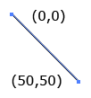
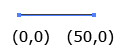
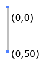
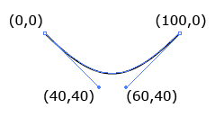
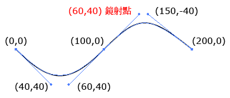
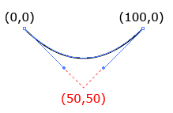
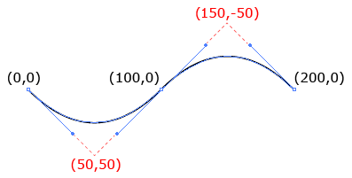
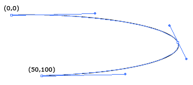
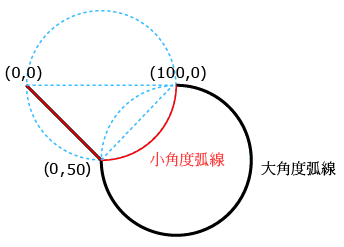
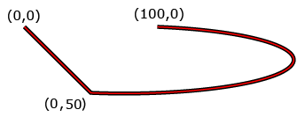

circle
<svg> <!--M10 10 为起笔坐标 ，h为横向，数值为正往右走 v为纵向，数值为正往下走，数值为负往上走 --> <!--画线的方法--> <!--<path d="M10 10 h 10 v 10 h -10 v -10" stroke-width="1" stroke="pink" fill-opacity="0"/>--> <!--画圆方法--> <!--M10 10 为圆心坐标 ，a(m 0,-100)为圆心相对坐标(0,0)，往上100 a表示要画弧 b(100,200)是相对与a的坐标结尾 0表示小角度 1表示大角度--> <path d="M100 100 m 0,-100 a 100 100 0 1 100,200 100 100 0 1 100,-200" stroke-width="1" stroke="skyblue" fill-opacity="0"/> </svg> stroke="green" stroke-width="5" 设置了stroke，stroke-width才会起效
path属性
- M：移动到（moveto）x,y
-
L：画直线到（lineto）x,y
L 可以從目前的点画垂直线到某個坐标， 有兩個參数個參数 x、y，也就是要移動到的坐标点， 下列程式为画一條线到 (50,50)。
<path d="M0 0 L50 50" stroke="black"/>
- Z：闭合路径
-
H：从当前坐标画水平直线到 x 坐标轴
可以从目前的点画水平线到坐标 x， 只有一個參数，x 数字越大越往左，数字越小越往右。 ( 小写则可视为长度 ) 下列程式为画一條水平线到 (50,0)。
<path d="M0 0 H50" stroke="black"/>
-
V：从当前坐标画水平直线到 y 坐标轴
V 可以從目前的点画垂直线到某個 y 坐标，只有一個參数，y 数字越大越往下，数字越小越往上。( 小写则可视为长度 ) 下列程式为画一條垂直线到 (0,50)。
<path d="M0 0 V50" stroke="black"/>
-
C：参数=>x1 y1 x2 y2 x y,画条贝赛尔曲线到 x， y，其中x1 y1 x2 y2为控制点
C 表示可以画一個如下圆所示的三次贝茲曲线， 因此总共會有六個控制点，分別是 x1,y1,x2,y2,x,y， 當中 x1,y2 表示第一個贝茲曲线的控制点， x2,y2 表示第二個贝茲曲线的控制点，x,y 则是线段的結束点， 这裡 C 和 c 的大小写一定要搞清楚，如果是使用 Illustrator 画出來的，c 是小写喔！ 下面的程式就會画出一個波浪型的线段。
<path d="M0 0 C40 40,60 40,100,0" stroke="black" fill="none"/>
-
S：参数=> x2 y2 x y,画条贝赛尔曲线到 x， y，其中 x2 y2为控制点
S 可以在原本的点后方建立一個帶有贝茲曲线控制点的点， 然后原本的点會以同样的斜率镜射一個贝茲控制点， 讲得很像绕口令，可以可以看下圆就明白了。
<path d="M0 0 C40 40,60 40,100,0 S150 -40, 200 0" stroke="black" fill="none"/>
-
Q：参数=> x1 y1 x y,画条贝赛尔曲线到 x， y，其中 x1 y1为控制点
Q 就简单多了，就是起点和终点的贝茲曲线共用同一個控制点，只需要有贝茲控制点的坐标和终点坐标即可。
<path d="M0 0 Q50 50, 100 0" stroke="black" fill="none"/>
-
T：参数=>x y,画条反射二次贝赛尔曲线到 x， y，其中以前一個坐标为控制点
T 只有一組參数 x,y ，表示终点的坐标，所以 T 的前方要接上 Q 才能画出對應的坐标线。
<path d="M0 0 Q50 50, 100 0 T200 0" stroke="black" fill="none"/>
-
A：参数=>rx ry x-axis-rotation large-arc-flag sweep-flag x y, 从目前点的坐标画個橢圆形到指定点的 x, y 坐标： 其中 rx, ry 为橢圆形的 x 轴及 y 轴的半径，x-axis-rotation 是弧线与 x 轴的旋转角度， large-arc-flag 则設定 1 最大角度的弧线或是 0 最小角度的弧线， sweep-flag 设定方向为 1 顺时针方向或 0 逆时针方向 ( Arc )
A指令是Path最精华的部分，也是最难的，参数也特别的多，先介绍参数再实例讲解
- rx ： 橢圆的 x 轴半径 ( 根据不同的终点換算成比例 )
- ry ： 橢圆的 y 轴半径 ( 根据不同的终点換算成比例 )
- x-axis-rotation ： 弧线與 x 轴的夾角
- large-arc-flag ： 1 为大角度弧线，0 为小角度弧线 ( 必須有三個点 )
- sweep-flag ： 1 为顺时针方向，0 为逆时针方向
- x ： 终点 x 坐标
- y ： 终点 y 坐标
先扁长型，x,y 轴半径比例为 5:1，小角度弧线，顺时针方向<path d="M0 0 A100 20,0 0 1 50 100" stroke="#000" fill="none"/> //因为只有兩個点，所以大小角度結果相同，返回原來的点了 下面的显示与上面一致 <path d="M0 0 A100 20,0 1 1 50 100" stroke="#000" fill="none"/>
大小角度区别
Path 里头我們只提供了兩個点，兩個点只有一條线，不會有角度的問題， 但是我們多增加一個点，就可以看出大小角度的差異。
大角度 ( 黑色线 ) <path d="M0 0 L50 50 A50 50,0 1 0 100 0" stroke="#000" fill="none"/> 小角度 ( 紅色线 ) <path d="M0 0 L50 50 A50 50,0 0 0 100 0" stroke="#f00" fill="none"/>
另外的情况：A的第一个参数平方第二个参数平方之和然后开根的值为sum， 若第一个参数与第二个参数之和reduce的值小于sum，则不管是否设置大小角度都重叠大角度 ( 黑色线 ) <path d="M0 0 L50 50 A50 10,0 1 0 100 0" stroke="#000" fill="none"/> 小角度 ( 紅色线 ) <path d="M0 0 L50 50 A50 10,0 0 0 100 0" stroke="#f00" fill="none"/>